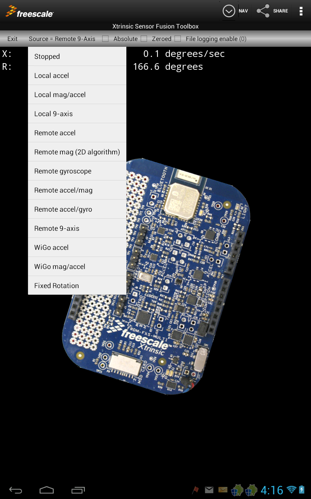
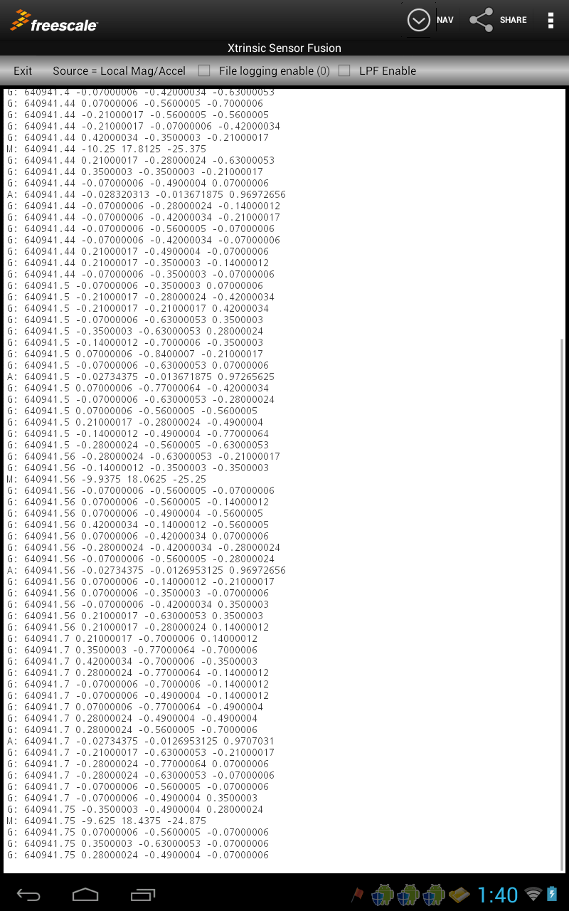

Data Logging Features
Introduction
The Data Logger page might more accuractly be considered to be the Console page. It contains a general text view utilized by many parts of the application.
Source Spinner
Data logging options are set via the Source spinner control.

This control has the same source options used on both Device and Panorama views. These are:
- STOPPED - There is no sensor data stream
- Local Accel - Uses data from accelerometer sensors on your Android device to drive the display. This selection can be used to demonstrate the limitations of using a single sensor type to drive orientation calculations. This version uses the native accelerometers on your Android device.
- Local Mag/Accel - Uses data from accelerometer and magnetic sensors on your Android device to drive the display. This is an example of 6-axis sensor fusion using the Native Android function: getRotationMatrix().
- Local 9-Axis - Uses data from accelerometer, magnetic and gyro sensors on your Android device to drive the display. This is an example of 9-axis sensor fusion using the Android synthetic rotation vector sensor.
- Remote Accel - Uses data from accelerometer sensors on your Bluetooth-enabled Freescale sensor board to drive the display. This selection can be used to demonstrate the limitations of using a single sensor type to drive orientation calculations.
- Remote mag (2D algorithm) - Uses data from the magnetometer sensor on your Bluetooth-enabled Freescale sensor board to drive the display. This selection can be used to demonstrate the limitations of using a single sensor type to drive orientation calculations.
- Remote gyroscope - Uses data from the gyroscope sensor on your Bluetooth-enabled Freescale sensor board to drive the display. This selection can be used to demonstrate the limitations of using a single sensor type to drive orientation calculations.
- Remote Mag/Accel - Uses data from accelerometer and magnetic sensors on your Bluetooth-enabled Freescale sensor board to drive the display. This is an example of 6-axis sensor fusion.
- Remote Accel/Gyro - Uses data from accelerometer and gyroscope sensors on your Bluetooth-enabled Freescale sensor board to drive the display. This is an example of 6-axis sensor fusion.
- Remote 9-Axis - Uses data from accelerometer, magnetic and gyro sensors on your Bluetooth-enabled Freescale sensor board to drive the display. This is an example uses Freescale 9-axis sensor fusion results calculated on your Freescale sensor board.
- Wi-Go accel - Uses data from accelerometer sensors on your Avnet Wi-Go module to drive the display. This selection can be used to demonstrate the limitations of using a single sensor type to drive orientation calculations. Uses data from accelerometer and magnetic sensors on your Avnet Wi-Go module to drive the display. This is an example of 6-axis sensor fusion.
- Wi-Go Mag/Accel - Uses data from accelerometer and magnetic sensors, as well as eCompass algorithm, on your Avnet Wi-Go to drive the display. This is an example of 6-axis sensor fusion.
- Fixed Rotation - Uses preprogrammed values to drive display functions. The logging function is inactive in this mode.
Log Formats
Data can be dumped to the log window (and output file) in any of three different formats. These are explored in the following sections.
Legacy Log Format
This format has been available since the first version of this application. The application can display sample logs for the following:
- Accelerometer record fields:
- A:
- Accelerometer sample time in seconds
- Accelerometer X value in g's
- Accelerometer Y value in g's
- Accelerometer Z value in g's
Example: "A: 704792.2 -0.3 0.5 0.812"
- Magnetometer record fields:
- Magnetometer sample time in seconds
- Magnetometer X value in micro-Teslas
- Magnetometer Y value in micro-Teslas
- Magnetometer Z value in micro-Teslas
Example: "M: 704792.2 -12.0 20.1 32.48"
- Gyro record fields:
- Gyro sample time in seconds
- Gyro X value in radians/s
- Gyro Y value in radians/s
- Gyro Z value in radians/s
Example: "G: 704792.2 -3.5 0.0001 .99001"
- Quaternions record fields:
- Q:
- Orientation sample time in seconds
- Quaternion q0 (cosine theta/2) value
- Quaternion q1 (x) value
- Quaternion q2 (y) value
- Quaternion q3 (z) value
Example: "Q: 704792.2 0.7071 0.00 0.7071 0.0001"

Hex Log Format
This format was introduced in the 2nd release of this application. It is intended only for development/debug purposes. It presents a view of the "raw" hex data recieved from the remote device. This varies between platforms. The embedded Bluetooth packet format is documented here. Note that the data shown in the log window is displayed AFTER decoding any escape sequences.
CSV Log Format
This format was also introduced in the 2nd release of this application. It can be used to write a comma delimited format readable by Excel and other tools.
The quaternion represents the axis/angle rotation required to rotate the board from a native ENU (East-North-Up) orientation to it's current orientation. "Columns" of the data are:
- timestamp in seconds
- Accelerometer X in g's
- Accelerometer Y in g's
- Accelerometer Z in g's
- Magnetometer X in microTeslas
- Magnetometer Y in microTeslas
- Magnetometer Z in microTeslas
- Gyro X in radians/sec
- Gyro Y in radians/sec
- Gyro Z in radians/sec
- Quaternion q0
- Quaternion q1
- Quaternion q2
- Quaternion q3
The logging window retains history for a limited number (generally 100-200 entries) of past logs. You can enable logging to a file by checking the File logging enable checkbox on the form. The application will then log up to a predetermined number of records before it stops. This number can be set in the Preferences screen. Care should be taken to keep this setting low enough so that the application does not attempt to utilize all the storage on your Android device. We recommend that you determine how much storage you are willing to devote to this task, and divide by 50. So if you have 1MB you can devote to logging, you can set the Preferences Max # of messages to record field to 1,000,000/50 = 20,000.
You can set the filename used for logging via the Preferences Output filename field. The file will be placed in a directory named Freescale_Demo in the external storage area of your Android device (often this is: "sdcard0"). You can send a copy of this file to any email account using the Sharing function. Note that the Clear Log Window command on the options menu also has the effect of closing any currently opened output files. If the File logging enable checkbox is checked, the output file will be reopened (AND CLEARED) when the next message is displayed.
Other controls that are useful in this mode include:
- Options Menu->Clear Log Window - sets the text view to empty ("");
- Options Menu->Dump Local Configuration - queries your Android device regarding local sensor support and logs the result to the text view.
- Share - allows you to email a copy of the current text view to any desired recipient. Please note that this feature utilizes the standard Android "intent" mechanism for sending email. You must have an email client installed on your Android device in order for this feature to work properly.
You can set a default email address for sharing activities via the applications Preferences screen. You can also set the Android sampling rate on the same screen.
Low Pass Filter
A low pass filter option is available for use with a number of Source/Algorithm options. Details are contained on a separate page.